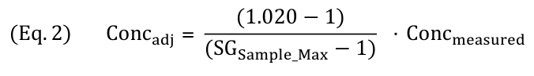

Technical Letters · TL23
Edition v1.0, 2021 (version 1.0) · effective 1 June 2021 · superseded
Retrieved on 25 November 2026 from https://www.wada-ama.org/sites/default/files/resources/files/tl23_growth_promoters_eng_2021_0.pdf
Editions: v2.0, 2024 (current) · v1.0, 2021
p. 1
MINIMUM REPORTING LEVEL FOR CERTAIN SUBSTANCES KNOWN TO BE POTENTIAL MEAT CONTAMINANTS
1.0 Introduction
WADA wishes to draw the attention of the Laboratories and Anti-Doping Organizations in charge of Results Management (the Results Management Authority, or RMA) to the following observations and instructions on the reporting of certain Prohibited Substances, which seeks to address the fact that these substances may be used as growth promoters for livestock in some countries and therefore may be associated with findings resulting from the consumption of contaminated meat.
- Clenbuterol is used in China, Guatemala and Mexico, as a growth promoter for cattle, lamb, poultry, and swine;
- Ractopamine is used in certain countries as a growth promoter for cattle, swine, and large breed turkeys;
- Zeranol is used in many countries as a growth promoter for cattle;
- Zilpaterol is used in certain countries as a growth promoter for cattle.
2.0 Reporting Requirements
All of the scientific evidence indicates that it is highly unlikely that consumption of edible tissue from livestock treated with any of these growth promoters would lead to a urinary concentration of the Prohibited Substance (or, in the case of zeranol, of the parent compound or its Metabolite(s) - please see also TL04[1]) greater than (>) 5 ng/mL.
Therefore:
- The presence in urine of clenbuterol or ractopamine or zilpaterol, or of zeranol or its Metabolite(s), at an estimated concentration greater than (>) 5 ng/mL shall be reported as an Adverse Analytical Finding (AAF).
- The presence in urine of clenbuterol or ractopamine or zilpaterol, or of zeranol or its Metabolite(s), at an estimated concentration at or below (≤) 5 ng/mL shall be reported as an Atypical Finding (ATF), triggering a mandatory investigation by the RMA to determine whether evidence exists that establishes that meat contamination is more likely than not the explanation for the ATF. If such evidence exists, the RMA will take no further action in respect of the ATF. If such evidence does not exist, the RMA will progress the finding as an AAF.
[Comment: Depending on the circumstances, the consumption of meat containing clenbuterol or ractopamine or zeranol or zilpaterol may lead to very low concentrations of that substance in the urine of the consumer of the meat. Therefore, the presence in urine of clenbuterol or ractopamine or zilpaterol, or of zeranol or its
Metabolite(s), at a concentration of 5 ng/mL or less shall be reported as an ATF, even though the likelihood of meat contamination as the cause decreases materially the closer the urinary concentration gets to that limit. Upon receipt of the ATF, the RMA shall conduct a mandatory investigation to determine whether or not there is sufficient evidence to support meat contamination as the more likely than not explanation.¹ ]
p. 2
- In each case, when the specific gravity (SG) of the urine Sample in question (as measured in the Laboratory) is greater than (>) 1.018, the concentration of the substance estimated in the Sample shall be adjusted prior to reporting according to the following equation:

Refer to the effective TD DL for instructions on calculating SGSample_Max].
3.0 References
[1] WADA Technical Letter TL04 - Analysis and Reporting of Zeranol.
[Current versions of WADA Technical Letters may be found at https://www.wada-ama.org/en/what-wedo/science-medical/laboratories ]
1 A Stakeholder Notice will be published, detailing the mandatory investigative process.
Retrieved on 25 November 2026 from https://www.wada-ama.org/sites/default/files/resources/files/tl23_growth_promoters_eng_2021_0.pdf